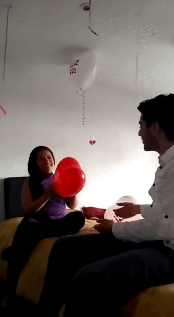

Nuestra Historia Un contenido con amor
Enero 21.
Aun recuerdo cuando te escribí, estabas en Instagram y yo simplemente te veía a diario pensando seriamente en pedirte una cita, no te conocia pero aun asi me decidí. Ahora estoy contando esta historia.
Nuestro primer picnic. Claro, consideramos esta salida como un picnic de bajo presupuesto pero fue la mejor salida que he tenido, me sentí protagonista de una película de amor, mi amada y yo danzando unto los aires frescos que brindan las tarde al lado del espectacular lago, tu sonrisa brilla, junto a tu corazón diciendo cada vez ¡TE AMO¡..

Como no recordar nuestra primera salida juntos, tu madre sobreprotectora fruto de la desconfianza, de que a lo mejor sería un chico común y corriente, de esos que te hicieron sufrir.
El mundo conspira y baila, yo en ti y tu en mí, Y si, ¿Te quedas?. No, pero sé que desde nuestras mentes estuvimos presentes toda la noche aunque no sentíamos nuestro calor, pero si nuestro corazón.
Cuando salíamos sin saber que llegaríamos tan lejos. En ese entonces quizás tu pensabas a donde llegaríamos pero jamás creer hasta donde. Ahora digo algo distinto. No tengo a donde llegar contigo, solamente quiero contigo todo lo que se pueda juntos, los dos. Llegar a donde nunca pensamos pero juntos.
Como olvidar los viajes, bueno... Paseos, que fue lindo a la finca, quiero volver a ir y si es posible acampar contigo para que veas lo lindo que es un atardecer, ver las estrellas caer y una fogata acompañar. Créeme que es una experiencia linda que quiero compartir contigo y quiero poder realizar.
Siempre estuve para apoyarte, aunque acepto que en algunas decisiones no podemos emparejar acertadamente, pero pues intento siempre buscar solución. Te quiero tanto que me has hecho cambiar hasta de mi propia opinión, ahora me gustan más los perritos, es un gran avance gracias a TI!.
Haz sido una persona muy especial para mi vida, desde ser esa mujer buena y de gran corazón, como también la novia que todo hombre quisiera tener, jejeje, no lo digo por los detalles si no por lo fiel, y claro, yo encantado de tus detalles, regalos, siempre me dejas anonadado y muy feliz. Te debo mucho mi Tatis.
Me gusto mucho esta foto. Quiero verte así, y lucharé por poderla ver una otra vez.
Quiero otro picnic, quiero otra salida, quiero más fotos, mas detalles, mas sonrisas, mas de los dos...
Te seguiré apoyando en tu estudio, en tu trabajo, en lo que se viene, quiero ser esa persona que aporte en tu vida y créeme que cuando yo lo hago, intento siempre quede de la mejor forma, buscar la perfección para casi todo. Recuerda que no estás sola, Dios te está ayudando y que cada artículo que lees, cada video que haces, cada actividad que haces y escribes, estas dejando tu huella, marca personal, siéntete muy orgullosa de tu carrera y de todo lo que has logrado y hasta el momento a dónde has llegado.
No necesitamos de tantas frases u oraciones de motivación, u motivo por el cual seguir adelante es más que suficiente. Este día fue muy especial para mí, un único día que al sentarnos debajo de un árbol comenzó esa motivación, ese motivo por el cual seguir adelante. Qué bueno que este momento es clave en este tema de motivación, casi todos los días paso cerca, cuando viajo a la Universidad, me dan más fuerzas y deseos por terminar.
¡Gracias!
Este día jugamos a ser niños, tú escribiste las más sinceras palabras en tus corazones, palabras que en estos momentos sirven para seguir adelante, palabras que demuestran lo maravillosa que eres. Recuerda esas palabras tú también.

Aquí jugamos a ser la modelo y el fotógrafo, deberíamos seguir haciéndolo, nuestros resultados son geniales y nos faltan muchas más locaciones. Juguemos a ser chef y crear nuevos platos, como en todo juego no todo puede ser fácil, aprovechemos de todo lo pasado para seguir adelante, recuerda “Levantar la frente y siempre sonreír, no para la foto, para la vida”.
Ver películas nuestro mejor hobbie, siempre habrá algo que ver, siempre existirá el motivo para estar juntos, con Doritos y Papas Fritas Mayonesa. Nuestro mejor plan de fin de semana, tenemos muchas películas por ver, no se te haga tarde para la próxima función.
Mi mejor cumpleaños, junto a mis padres, hermana y junto a ti, los que en verdad me aman y siempre estarán presentes en las más grandes dificultades, me apoyaron y sé que siempre lo harán. Mi mayor deseo, es que se vuelva a repetir.
Y si te quedas esta noche
Y si te quedas, ¿qué?
Y si te exploro, ¿qué?
Y si te entiendo, ¿qué?
Y si te siento, ¿qué?
Los viajes que hacía antes de ir a la Universidad, a las 7 de la mañana ya estaba contigo, y después de salir, en ocasiones me la pasaba todo el día, fueron momentos agradables, importantes también para mí, se mas de tu vida, el saber cómo eres y tranquilamente puedo decir, ME GUSTAS.
¿Recuerdas la primera noche que salimos?, la recuerdo muy bien, te miraba fijamente a tus ojos, brillaban demasiado y tu boquita me hacía pensar en abalanzarme y besarla, me contuve por pena y por qué quizás quería saber que también era mutuo.
Toco tu boca, me basta con cerrar los ojos para deshacer todo y recomenzar, con mi mano comienzo a dibujar tu silueta, en mi mente te veo completamente, dibujo tu boca y que por un azar que no se comprender, coincide indescriptiblemente con la que estoy besando y que al separarnos, suspiramos y sonreímos con una complicidad exacta a la que en i mente dibujo.
Volvemos a juntarnos, cada vez nuestras miradas firmes se opacan, nuestros ojos se agrandan, se acercan entre sí, las bocas se encuentran luchando tibiamente en contra de que los labios desborden, juego en los recintos más recónditos y solitarios de mi mente, hacía mucho no sentía tanto que comencé a sentir movimientos, fragancias, sabores, ahora mordernos es dulce,
y si nos ahogamos en un breve y terrible absorber simultaneo del aliento, esa muerte es bella, por mi mente no vagaban ideas, contorneaban luces, músicas armoniosas que cantaban al compás de mi corazón, después te sentí, sentí tu corazón retumbar contra mí, como una luna desdibujada en el agua, era muy tenue pero se sentía. Cuando volví abrir los ojos, éramos solos tú y yo.
Quiero más navidades, más velitas, más año nuevos contigo. Quiero volver a pasar fechas especiales contigo, la paso mucho mejor. Aunque me enferme o tenga muchos trabajos estaré ahí.
Perdona todo o malo, pero este amor que siento por ti es indescriptible, no tengo la capacidad de dejarte de hablar, mucho menos de dejarte, después de ti no tengo idea que será después. Te necesito más de lo que crees, más de lo que piensas…
Recuerda los mejores momentos como el siguiente, son los mejores de mi vida.